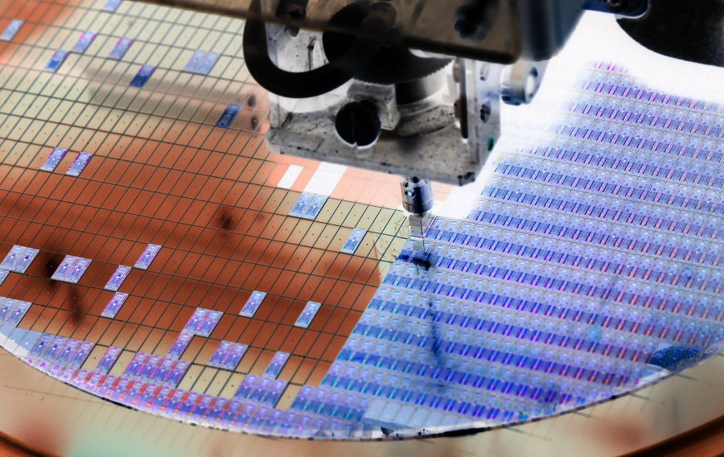

-
 Ozon повысит тарифы и комиссии за продажу с 15 марта
Ozon повысит тарифы и комиссии за продажу с 15 мартаOzon объявил, что с 15 марта изменит тарифы логистики, а также комиссии за продажу некоторых товаров. В компании заверили, что для 7 продавцов из 10 расходы в среднем вырастут на 2% от стоимости товаров или не увеличатся совсем
-
Возможные проблемы в TSMC могут отложить выход следующего поколения процессоров AMD
По слухам, TSMC столкнулась с проблемами при работе над 3-нанометровыми чипами. Инсайдеры сообщают, что исправной продукции в новых партиях довольно мало. Проблемы могут коснуться клиентов TSMC, включая AMD
-
 Разработчица улучшила iPod, чтобы слушать музыку без алгоритмов как раньше
Разработчица улучшила iPod, чтобы слушать музыку без алгоритмов как раньшеРазработчица Элли Хакстейбл улучшила свой iPod, чтобы слушать музыку без алгоритмов. Она самостоятельно загружает песни на устройство. Также на iPod можно сыграть в Doom и использовать его для управления громкостью на MacBook